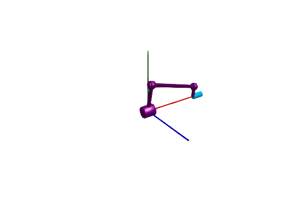

Modeling kinematic loops
Kinematic loops can be difficult to simulate since they introduce an over-constrained system. This tutorial demonstrates how to handle a few common cases of kinematic loops.
Common for every kinematic loop is that the modeler must handle the redundant equations introduced by closing the loop. There are three main ways of doing this, listed in their general order of preference:
- Use a joint assembly, a component that combines several joints and solves the nonlinear equations analytically.
- Use a joint constraint rather than a joint (sometimes called and implicit joint).
- Use a regular joint with the option
iscut = trueto indicate that the joint is a cut joint.
Joint assemblies offer the possibility to analytically solve one or several nonlinear algebraic equations, such that the solver does not have to solve them with iterative methods. This generally provides a much faster simulation. Joint assemblies are components that consists of several joints with rigid bodies in between, such as SphericalSpherical and UniversalSpherical.
Joint constraints work more or less like regular joints, but do not have state variables. In a kinematic loop, one joint may be changed to a joint constraint in order to simplify the nonlinear algebraic equations.
If no joint assembly or constraint that simplify the loop is available, one joint in each loop must be marked as iscut = true. This indicates that the loop is closed using a smaller number of residual equations rather than the full number of orientation constraints implied by equality between rotation matrices.
A planar kinematic loop
A planar loop is one where the loop is confined to a plane, i.e., all joints in the loop have parallel rotation axes. To simulate a mechanism with such a loop, we break the kinematic loop by replacing one of the revolute joints with a RevolutePlanarLoopConstraint. The reason is that, e.g., the cut forces in direction of the axes of the revolute joints cannot be uniquely computed. The model below contains four bars connected by revolute joints, forming a planar loop. In order to make the animation interesting, we attach dampers to two of the joints such that the mechanism will oscillate for a while before coming to rest.
Perhaps surprisingly, we use 5 joints in total for this mechanism. If we had used four joints only and connected the first frame of the first joint to the world, the mechanism would not be free to rotate around the world frame. We thus have two joints connected to the world frame below. Exactly one revolute joint is changed into a RevolutePlanarLoopConstraint to break the planar loop.
using Multibody
using ModelingToolkit
import ModelingToolkitStandardLibrary.Mechanical.Rotational
using Plots
using OrdinaryDiffEq
using LinearAlgebra
using JuliaSimCompiler
t = Multibody.t
D = Differential(t)
world = Multibody.world
l = 1.5
systems = @named begin
j1 = Revolute(axisflange=true) # We use an axis flange to attach a damper
j2 = Revolute(axisflange=true)
j3 = Revolute()
j4 = RevolutePlanarLoopConstraint()
j5 = Revolute()
b1 = BodyShape(m=1, r = [l, 0, 0], radius=0.03)
b2 = BodyShape(m=1, r = [0.0, l, 0], radius=0.03)
b3 = BodyShape(m=1, r = [-l, 0, 0], radius=0.03)
b4 = BodyShape(m=1, r = [0.0, -l, 0], radius=0.03)
damper1 = Rotational.Damper(d=0.1)
damper2 = Rotational.Damper(d=0.1)
end
connections = [
connect(world.frame_b, j1.frame_a)
connect(j1.frame_b, b1.frame_a)
connect(b1.frame_b, j2.frame_a)
connect(j2.frame_b, b2.frame_a)
connect(b2.frame_b, j3.frame_a)
connect(j3.frame_b, b3.frame_a)
connect(b3.frame_b, j4.frame_a)
connect(j4.frame_b, b4.frame_a)
connect(b4.frame_b, j5.frame_a)
connect(j5.frame_b, world.frame_b)
# We need 5 joints since j1.frame_a is rigidly attached to the world, and b4 closing the loop would thus not be able to rotate around j1.
connect(j1.axis, damper1.flange_a)
connect(j1.support, damper1.flange_b)
connect(j2.axis, damper2.flange_a)
connect(j2.support, damper2.flange_b)
]
@named fourbar = ODESystem(connections, t, systems = [world; systems])
fourbar = complete(fourbar)
ssys = structural_simplify(IRSystem(fourbar))
prob = ODEProblem(ssys, [fourbar.j1.phi => 0.1], (0.0, 10.0))
sol = solve(prob, FBDF(autodiff=true))
plot(
plot(sol, idxs = [j1.phi, j2.phi, j3.phi]),
plot(sol, idxs = [j1.w, j2.w, j3.w]),
)
using Test
@test SciMLBase.successful_retcode(sol)Test Passed3D animation
Multibody.jl supports automatic 3D rendering of mechanisms, we use this feature to illustrate the result of the simulation below:
import GLMakie
Multibody.render(fourbar, sol, 0:0.05:10; x=4, y=-1, z=4, lookat=[0, -1, 0], filename = "fourbar.gif") # Use "fourbar.mp4" for a video file
Using cut joints
The mechanism below is another instance of a 4-bar linkage, this time with 6 revolute joints, 1 prismatic joint and 4 bodies.
We show two different ways of modeling this mechanism, first using a cut joint, and later using a much more efficient joint assembly.
In order to simulate this mechanism using a cut joint, the user must
- Use the
iscut=truekeyword argument to one of theRevolutejoints to indicate that the joint is a cut joint. A cut joint behaves similarly to a regular joint, but it introduces fewer constraints in order to avoid the otherwise over-constrained system resulting from closing the kinematic loop. While almost any joint can be chosen as the cut joint, it might be worthwhile experimenting with this choice in order to get an efficient representation. In this example, cuttingj5produces an 8-dimensional state realization, while all other joints result in a 17-dimensional state. - Increase the
state_priorityof the jointj1above the default joint priority 3. This encourages the model compiler to choose the joint coordinate ofj1as state variable. The joint coordinate ofj1is the only coordinate that uniquely determines the configuration of the mechanism. The choice of any other joint coordinate would lead to a singular representation in at least one configuration of the mechanism. The jointj1is the revolute joint located in the origin, see the animation below where this joint is made larger than the others.
To drive the mechanism, we set the initial velocity of the joint j1 to some non-zero value.
systems = @named begin
j1 = Revolute(n = [1, 0, 0], w0 = 5.235987755982989, state_priority=10.0, radius=0.1f0) # Increase state priority to ensure that this joint coordinate is chosen as state variable
j2 = Prismatic(n = [1, 0, 0], s0 = -0.2)
b1 = BodyShape(r = [0, 0.5, 0.1], radius=0.03)
b2 = BodyShape(r = [0, 0.2, 0], radius=0.03)
b3 = BodyShape(r = [-1, 0.3, 0.1], radius=0.03)
rev = Revolute(n = [0, 1, 0])
rev1 = Revolute()
j3 = Revolute(n = [1, 0, 0])
j4 = Revolute(n = [0, 1, 0])
j5 = Revolute(n = [0, 0, 1], iscut=true)
b0 = FixedTranslation(r = [1.2, 0, 0], radius=0)
end
connections = [connect(j2.frame_b, b2.frame_a)
connect(j1.frame_b, b1.frame_a)
connect(rev.frame_a, b2.frame_b)
connect(rev.frame_b, rev1.frame_a)
connect(rev1.frame_b, b3.frame_a)
connect(world.frame_b, j1.frame_a)
connect(b1.frame_b, j3.frame_a)
connect(j3.frame_b, j4.frame_a)
connect(j4.frame_b, j5.frame_a)
connect(j5.frame_b, b3.frame_b)
connect(b0.frame_a, world.frame_b)
connect(b0.frame_b, j2.frame_a)
]
@named fourbar2 = ODESystem(connections, t, systems = [world; systems])
fourbar2 = complete(fourbar2)
ssys = structural_simplify(IRSystem(fourbar2))
prob = ODEProblem(ssys, [], (0.0, 1.4399)) # The end time is chosen to make the animation below appear to loop forever
sol = solve(prob, FBDF(autodiff=true));
@test SciMLBase.successful_retcode(sol)
plot(sol, idxs=[j2.s]) # Plot the joint coordinate of the prismatic joint (green in the animation below)
import GLMakie
Multibody.render(fourbar2, sol; x=-2, y = 2, z = 3, filename = "fourbar2.gif") # Use "fourbar2.mp4" for a video file
Using a joint assembly
This example models a mechanism similar to the previous one, but replaces several joints and bodies with the aggregate UniversalSpherical joint. This joint is a combination of a universal joint and a spherical joint, with a bar in-between. A benefit of using this joint assembly in a kinematic loop is that some nonlinear equations are solved analytically, and the solver will thus see fewer nonlinear equations. This can lead to a faster simulation.
systems = @named begin
j1 = Revolute(n = [1, 0, 0], w0 = 5.235987755983, state_priority=12.0, radius=0.1f0) # Increase state priority to ensure that this joint coordinate is chosen as state variable
j2 = Prismatic(n = [1, 0, 0], s0 = -0.2)
b1 = BodyShape(r = [0, 0.5, 0.1], radius=0.03)
b2 = BodyShape(r = [0, 0.2, 0], radius=0.03)
b3 = FixedTranslation(r = [1.2, 0, 0], radius=0)
joint_us = UniversalSpherical(n1_a = [0, 1, 0], rRod_ia = [-1, 0.3, 0.1])
end
connections = [connect(j2.frame_b, b2.frame_a)
connect(j1.frame_b, b1.frame_a)
connect(j1.frame_a, world.frame_b)
connect(b1.frame_b, joint_us.frame_b)
connect(joint_us.frame_a, b2.frame_b)
connect(b3.frame_a, world.frame_b)
connect(b3.frame_b, j2.frame_a)
]
@named fourbar_analytic = ODESystem(connections, t, systems = [world; systems])
fourbar_analytic = complete(fourbar_analytic)
ssys_analytic = structural_simplify(IRSystem(fourbar_analytic))
prob = ODEProblem(ssys_analytic, [], (0.0, 1.4399))
sol2 = solve(prob, FBDF(autodiff=true)) # about 4x faster than the simulation above
plot!(sol2, idxs=[j2.s]) # Plot the same coordinate as above
In practice, the two simulations are not exactly identical since we haven't modeled any mass attached to the rod in the joint assembly. We could add such mass to the rod by attaching to the joint_us.frame_ia connector.
import GLMakie
Multibody.render(fourbar_analytic, sol2; x=-2, y = 2, z = 3, filename = "fourbar_analytic.gif")While the version with a cut joint were solving for
length(unknowns(ssys))8variables, the version with the joint assembly solved for only
length(unknowns(ssys_analytic))3variables.
We can also inspect the mass matrices of the two systems to see how many nonlinear algebraic equations the solver has to deal with
using LinearAlgebra
diag(ssys.mass_matrix), diag(ssys_analytic.mass_matrix)([1, 0, 0, 0, 0, 0, 0, 1], [1, 0, 1])A 1 on the diagonal indicates a differential equation, while a 0 indicates an algebraic equation. The cut-joint version has 6 nonlinear algebraic equations, while the joint assembly version has only 1. Both of them have 2 differential equations (position and velocity), corresponding to the 1 degree of freedom in the mechanism. Nonlinear algebraic equations are more expensive to solve than differential equations.